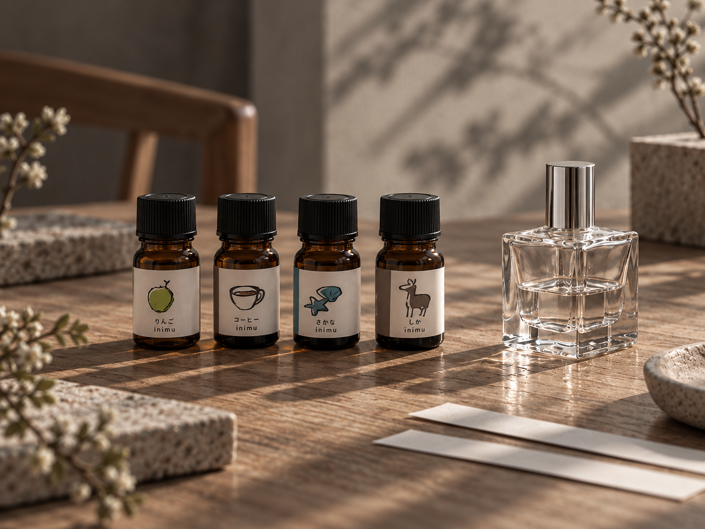

協力店に四季の香りのディフューザーを設置し、浅草の思い出を香りで印象的にする取り組みです。
公式記事では、馨る浅草MAPを片手に散策しながら香りを楽しむ内容が紹介されています。記事には2025年の季節の香りが掲載されています。

COLLABORATION / STORY

協力店に四季の香りのディフューザーを設置し、浅草の思い出を香りで印象的にする取り組みです。
公式記事では、馨る浅草MAPを片手に散策しながら香りを楽しむ内容が紹介されています。記事には2025年の季節の香りが掲載されています。